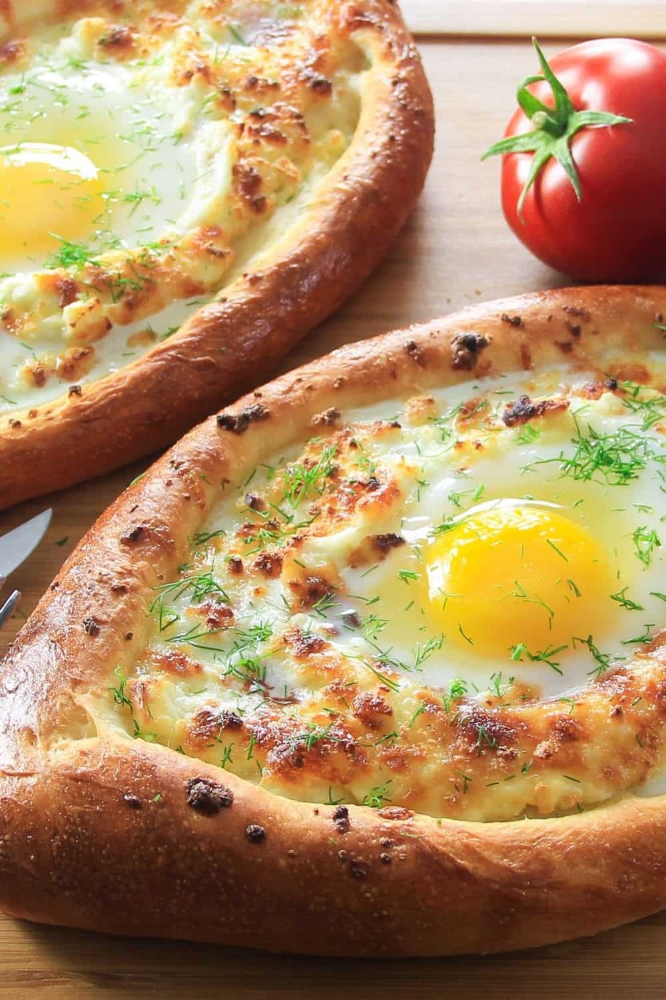

Khachapuri

Description
This Khachapuri recipe is a combination of fluffy homemade bread, multiple kinds of cheeses and a runny egg in the center.
It’s so cheesy and delicious!
Ingredients
- Flour
- Salt
- Yeast
- Sugar
- Milk
- Oil
- Egg
- Butter
- Cheese
Steps
- Combine flour, salt, yeast, and sugar in a bowl.
- Add warm milk.
- Using the hook attachment, knead the dough until it takes shape.
- Add oil and knead some more.
- Place the dough in a greased bowl. Cover and let it double in size.
- Remove from bowl and divide the dough into 4 boat-shaped pieces.
- Place the bread boast on a baking sheet lined with parchment.
- Combine the three kinds of cheese and fill each bread boat.
- Using a pastry brush, brush with egg wash and bake for 15 minutes at 450 degrees Fahrenheit.
- Pull the khachapuri out of the oven, then make a well in the middle.
- Drop the egg in the center, add pieces of butter to the melted cheese, and bake for another 5-6 minutes.